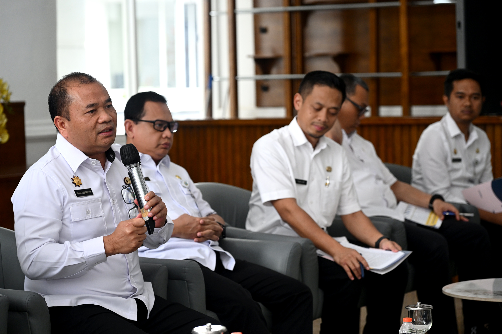

APTIKOM Sumut adalah asosiasi perguruan tinggi di bidang informatika, teknologi informasi, dan ilmu komputer yang berdedikasi untuk meningkatkan kualitas pendidikan dan SDM digital di Provinsi Sumatera Utara.
Temukan semua layanan dan informasi penting APTIKOM Sumut dalam satu tempat.
Ikuti perkembangan terbaru seputar dunia informatika dan kegiatan APTIKOM Sumut.

Upaya Pemerintah Provinsi Sumatera Utara dalam mengembangkan inovasi digital di sektor keuangan daerah berhasil mendapatkan pengakuan di tingkat nasional. Penghargaan ini menjadi bukti nyata bahwa transformasi digital yang didukung oleh sinergi antara pemerintah daerah dan institusi pendidikan seperti APTIKOM Sumut telah memberikan dampak positif yang terukur. Pencapaian ini diharapkan mendorong lebih banyak inisiasi digitalisasi di berbagai sektor pemerintahan dan pendidikan di Sumatera Utara.
Jangan lewatkan seminar, workshop, dan kegiatan menarik dari APTIKOM Sumut.
Bergabunglah bersama lebih dari 50 perguruan tinggi anggota dan raih manfaat jaringan, program, serta kolaborasi akademik yang luas di seluruh Sumatera Utara.
Peluang karir dari perusahaan teknologi mitra APTIKOM Sumut.